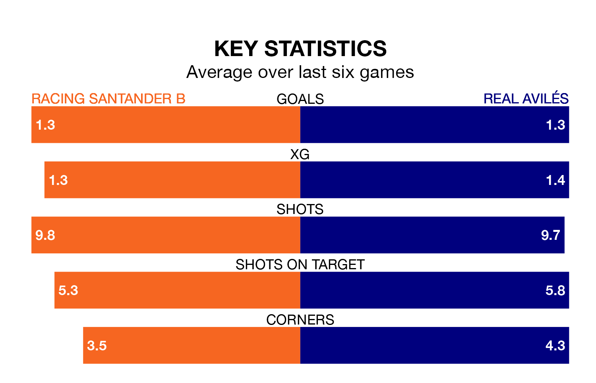

Racing Santander B face Real Avilés on Sunday looking to secure a first win in eight Segunda División RFEF Group 1 games.
Racing Santander B have lost three and drawn four matches since they last earned three points – against Gimnástica Torrelavega on February 3.
They face an Avilés side who have won three and drawn two over that time.
With 40 goals in 28 games so far this season, Racing Santander B are the league's third-highest scorers with 1.4 goals per game. But they are conceding more than average too, letting in 35 goals at a rate of 1.2 per game.
Avilés are also above average scorers, with 1.2 goals per game, compared to a league average of 1.1. They have conceded 1.0 goal per game.
The hosts are sixth in the table after 28 games, of which they have won nine and drawn 11, earning 38 points.
The away side are two places behind Racing Santander B in eighth, with eight wins and 13 draws putting them on 37 points.
In the last three years, Racing Santander B and Avilés have played each other on three occasions. Racing Santander B won all of them.
Their last meeting was on November 19, when Racing Santander B won 2-1 away.
Racing Santander B's last match was on March 24, a 2-2 draw against Real Oviedo B, with Daniel González García and Álvaro Santamaría Arenas getting the goals for Racing Santander B.
Avilés lost 1-0 against Zamora CF last time out, also on Sunday.
Updated: 10:31 (UTC), 31/03/24